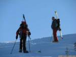
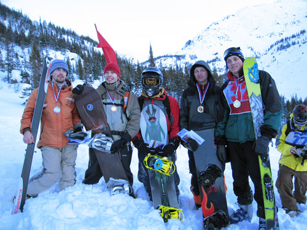
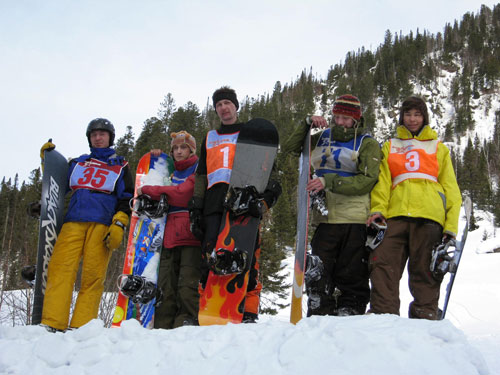
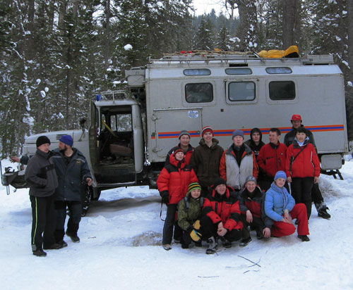
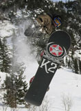
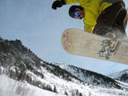
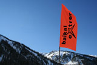

|
|
|
Соревнования на Мамае от Байкальского Экстрима
(10-11 февраля 2007) Одно из крупных событий снегосезона в Прибайкалье - соревнования по фрирайду на Мамае, проводимые Байкальским Экстримом (Федерация экстримальных видов спорта и путешествий Республики Бурятия). Официально соревы называются ни много, ни мало - IV открытый Чемпионат Республики Бурятии по фрирайду. Хотя и по фристайлу (бигэйру) тоже было соревнование. Как всегда, хорошая организация - участники из Улан-Удэ, Иркутска, Ангарска, судьи, протоколы, призы, спасатели на всякий пожарный и многое другое... К сожалению лично не видел и не участвовал, хотя было желание, так что предоставлю слово организаторам: "Теперь о месте проведения. Высокий цирк - пожалуй,
самый крутой цирк на Мамае. Перепад высот в районе проведения соревнований
составляет около 560 метров, а длина спуска всего 900 метров, из которых
половина собственно сам цирк, а остальное - сбросы и кулуары с выносами.
При этом у фрирайдера есть большой выбор из 8-10 вариантов движения
с прыжками и без..." Лично поздравляю Трифонова Александра, занявшего 2 место по фрирайду на горных лыжах! Молодец! Опытный боец, успевающий в одиночку приехать из Ангарска, поучаствовать, всех зафотать и написать отчет! Всё смотрите здесь - xslidex.com , а пока небольшой отрывок:  "Стартовые взносы уплочены, торжественное построение выполнено. Время 13:15 начинается подъём на Мамай к месту старта. Всю дорогу наверх поднимался вместе с Евгением и Александром, у лыжником скорость подъёма чуть медленнее чем у бордеров, так что с лыжниками подниматься - самое то! На гребне задувает ветер, радует что тёплый. Через 3 часа подъёма в 16:15 оказываемся на вершине. Передеваюсь, маленький перекус, включаю бодрящую музыку из лыжного фильма и теперь можно катить вниз..."
Победители соревнований по Фрирайду :  Победители и участники соревнований по Бигэйру :  Байкальский Экстрим:  Уважительный привет лидерам Байкальского Экстрима - Сергею и Оксане! Люди, для которых экстрим - не просто хобби на выходные, а вполне серьезное дело... Люди, которые следуют своим календарным планам... :)
Февраль 2007. Белокрылов Алексей. |
Из протоколов: Фрирайд (борд)  Фрирайд (лыжи)  БигЭйр (борд) Полный протокол соревнований на сайте Байкальского Экстрима  |